Today I will be talking about two papers utilising a social network perspective with regards to civic participation, and afterwards I have a short section on my own ideas for research questions.
While both papers are on very similar topics, they operationalise civic action differently. They also measure networks in different ways.
Service, activism and friendships in high school: A longitudinal social network analysis of peer influence and critical beliefs – Wegemer (2022) Wegemer (2021)
The first paper I chose is “service, activism and friendships in high school: A longitudinal social network analysis of peer influence and critical beliefs” by Wegemer (2022). This paper tries to answer the question whether peer influence and perceptions of inequities promote civic behaviour at a predominantly low-income Latinx high school. Especially the first part of this question is interesting in light of this course, as for the other one the author does not explicitly use a social network perspective. But before we get into the methodology, first a quick explanation of how the author measures civic behaviour.
The author distinguishes between two aspects of civic behaviour: Service and activism. Service is measured by asking how often the respondents volunteer or organise charitable events. These are activities that are explicitly meant to help and build the community. The second aspect is activism, which is more politically oriented. This is measured by asking how often the respondents, for example, campaign for specific issues. The author analyses these two aspects separately.
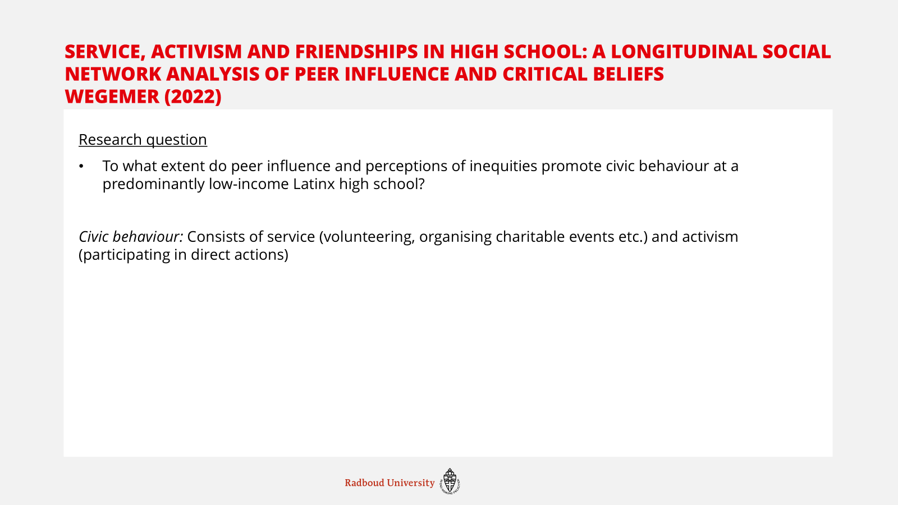
As for the data, for this paper they collected longitudinal social network data. The respondents were asked to fill out a survey on two time points: March 2019 and March 2020. In the end 72% of the students enrolled at both time points also filled out the survey both times, and were thus used for this research. In order to collect the network data, the researcher asked every respondent to give the first and last names of up to the five closest friends. This way the author created a socionet of all friendship ties in the school.
For the analysis the author used a stochastic actor based model, employing RSiena. This was not really explained any further, so I do not know what this means exactly. But I think that that is what this course is for.
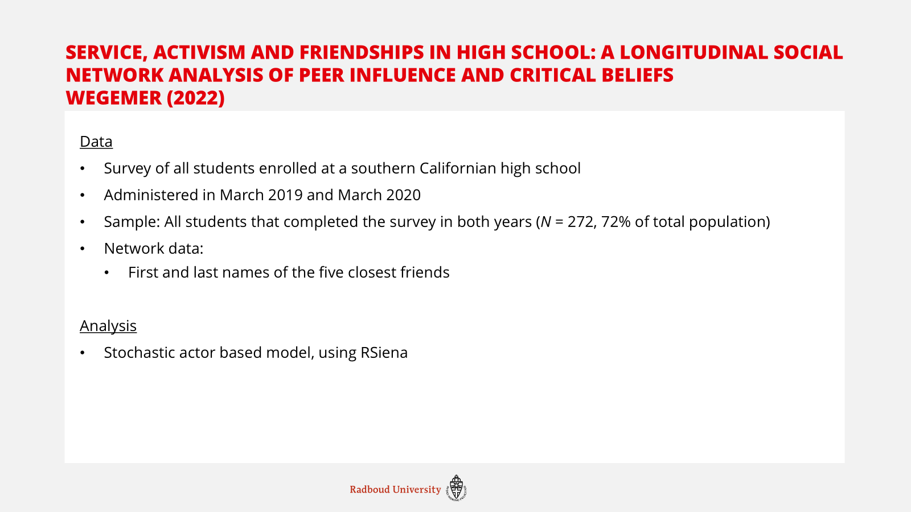
For this paper I struggled to find the ‘theoretical consequences’ of using a social network perspective. The paper did not have a very extensive theory section, and was mostly reporting on previous empirical findings. While the authors do mention some theory, it is not completely clear how they deduced the specific hypotheses from this theory. Nonetheless, in the hypotheses concerning peer influence, there is a clear social network perspective. The first hypothesis the author tested was whether students’ become more similar in both their behaviour (service and activism) and attitudes (perceptions of inequities) to their peers. Interestingly, only ego’s service behaviour was affected by a students’ network. The author argues that this is potentially because of the opportunities that the school offers with regards to service behaviour, where it is facilitated to start for example volunteering. This facilitation is not happening for activism behaviour.
This explanation of facilitation by the school is also why the second hypothesis expected for the socialisation effect to be greater for service than for activism and perceptions of inequities. As there is no effect of activism or perceptions, and there is an effect of service, this is kind of inherently found.
The last two hypotheses don’t take a specific social network perspective, so I’ll just quickly go through them, as they’re not as relevant for this course. So I put them, and the results, up on the screen, but I’ll skip them for now.
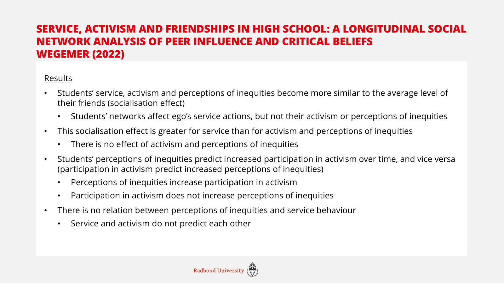
Civic development within the peer context: Associations between early adolescent social connectedness and civic engagement – Oosterhoff et al (2021) Oosterhoff et al. (2021)
The second article I want to talk about is “civic development within the peer context: Associations between early adolescent social connectedness and civic engagement” by Oosterhoff et al (2021). This paper tries to answer how social connectedness is associated with civic engagement in early adolescents, and whether this relationship differs across gender and grade (age). Again, I’ll start by explaining what these authors mean by civic engagement. They measured and analysed five separate aspects of civic engagements: (1) volunteering, (2) political engagement, (3) environmentalism, (4) civic efficacy, and (5) social responsibility values. Here we can see that there is a slight difference with the previous paper, where for example volunteering was part of the measure for service, it is its own category in this paper.
As for social connectedness, the authors again use five measures: (1) popularity, or how many in coming ties someone has, (2) activeness, or how many out going ties someone has, (3) reciprocity, or how often an outgoing tie is met with an in coming tie, (4) betweenness, or with how many separate peer groups someone is connected and (5) eigenvector, or how popular your friends are.
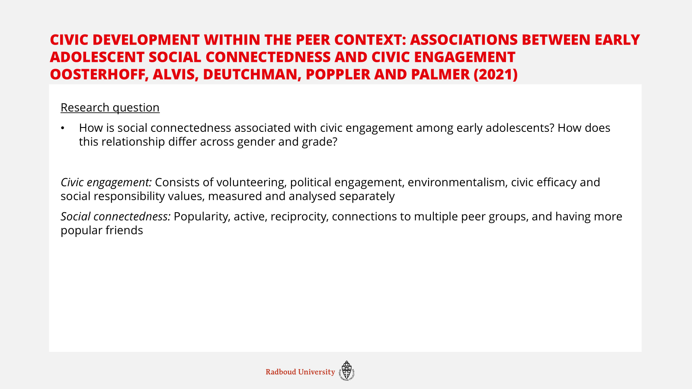
As for the data, this paper again looks at school-level data. This time the authors used a cross-sectional design, where they looked at all 6th through 8th grade students. 85% of all sampled students responded. The authors provided the respondents with a list of all students in 6th through 8th grade, and asked them to pick up to seven people with whom they spend the most time. After that the respondents were asked to rate how much they like spending time with that person. Thus, this paper is able to take the kind of relationship into account, although they only utilise the positive ties with other people, mirroring the previous article where only friends were seen as ties.
For the analysis this paper used regression analyses, using suite in R, which again, I don’t know what that means.
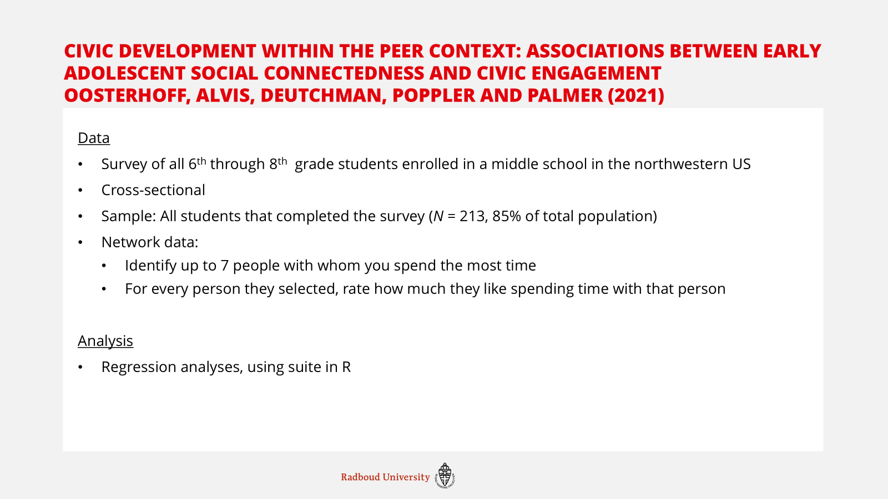
The results of this paper are, as the authors themselves say, quite ‘nuanced’. Because the authors analysed all aspects of social connectedness and civil engagement separately, there are a lot of different relations, some of which do have significant results, some of which don’t. I put the results up on the slides, but I’ll mention the most important ones.
Youth who mentioned having more ties (active), have a higher civic efficacy. This was not found for any of the other measures of social connectedness. Due to the cross-sectional design, it is impossible to determine whether having more out-going ties leads to higher efficacy, or the other way around. Interestingly, and contrary to the expectation, youth who have lower betweenness and eigenvector were more engaged in political behaviour. As the relationship between any measure of social connectedness and volunteering/ social responsibility was not found, the moderation hypothesis that this would be stronger for girls was also not found. And as you can see there are some measures of social connectedness that are more strongly related to some measures of civic engagement for boys than for girls and for younger people than for older people, but it is only on very specific relationships.
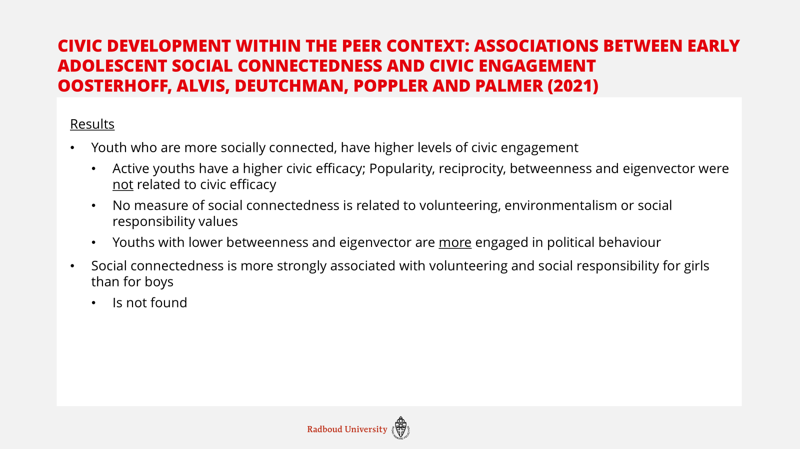
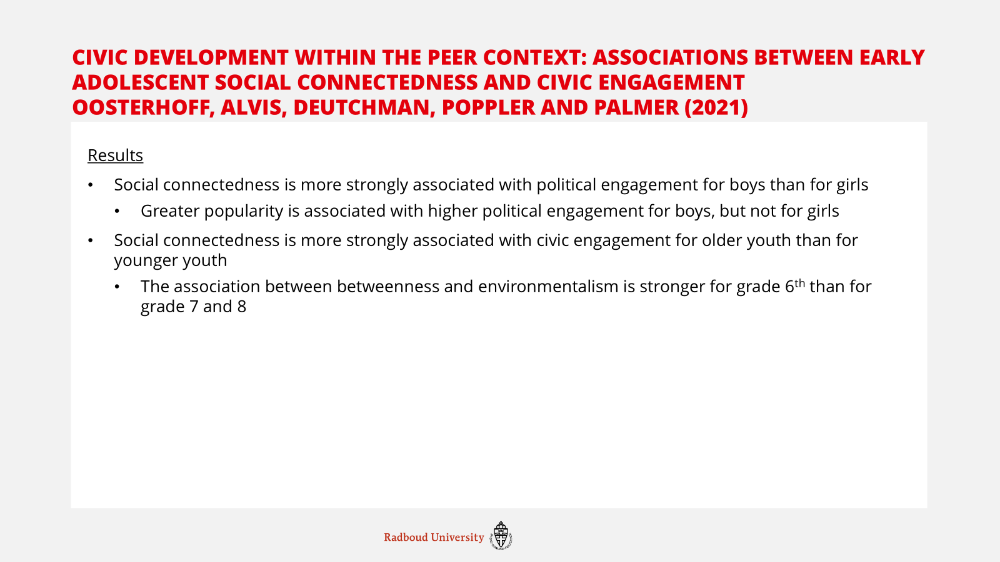
Lastly, I will quickly talk about my own topic. I struggled a little bit with what I wanted to do, and how I wanted to measure, especially because I don’t really know what is or isn’t possible with social network analysis/ within this course. But this is a rough first idea of what I find interesting.
As an outcome I would be interested to look into political participation, but I have not yet decided what kind specifically. I think this depends partly on the dataset, as for example the age matters a lot for whether you can measure things like voting. At first I wanted to do something like participation in protests, but I am afraid that this is too niche for it to really show up in (relatively small-N) network data. On the macro level, I would thus like to answer how positive peer influence affects youths’ political participation.
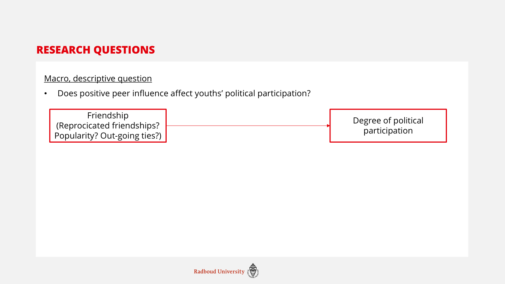
For the micro explanatory question I would like to answer why positive peer influence would affect political participation. Specifically I would like to see whether youth becomes more similar to each other, if they are connected. I would especially like to see whether people become more similar, or whether one person becomes more like the other person.
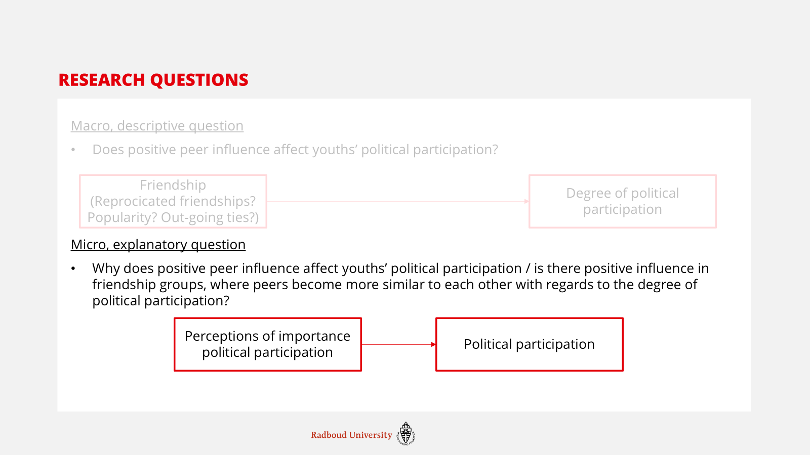
So this would end up with a conceptual model like this
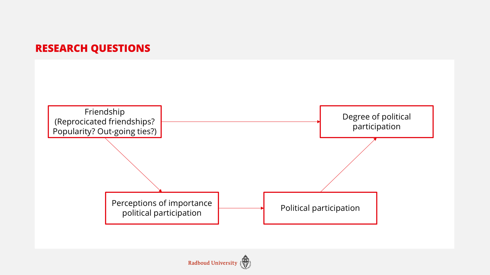
#install.packages("RSiena")
#install.packages("igraph")
require(RSiena)## Loading required package: RSienarequire(igraph)## Loading required package: igraph##
## Attaching package: 'igraph'## The following objects are masked from 'package:network':
##
## %c%, %s%, add.edges, add.vertices, delete.edges, delete.vertices, get.edge.attribute,
## get.edges, get.vertex.attribute, is.bipartite, is.directed, list.edge.attributes,
## list.vertex.attributes, set.edge.attribute, set.vertex.attribute## The following objects are masked from 'package:lubridate':
##
## %--%, union## The following objects are masked from 'package:dplyr':
##
## as_data_frame, groups, union## The following objects are masked from 'package:purrr':
##
## compose, simplify## The following object is masked from 'package:tidyr':
##
## crossing## The following object is masked from 'package:tibble':
##
## as_data_frame## The following objects are masked from 'package:stats':
##
## decompose, spectrum## The following object is masked from 'package:base':
##
## unionTrying to figure out the descriptive statistics of a network data set
s501## V1 V2 V3 V4 V5 V6 V7 V8 V9 V10 V11 V12 V13 V14 V15 V16 V17 V18 V19 V20 V21 V22 V23 V24 V25 V26
## 1 0 0 0 0 0 0 0 0 0 0 1 0 0 1 0 0 0 0 0 0 0 0 0 0 0 0
## 2 0 0 0 0 0 0 1 0 0 0 1 0 0 0 0 0 0 0 0 0 0 0 0 0 0 0
## 3 0 0 0 1 0 0 0 0 1 0 0 0 0 0 0 0 0 0 0 0 0 0 0 0 0 0
## 4 0 0 1 0 0 0 0 0 1 0 0 0 0 0 0 0 0 0 0 0 0 0 0 0 0 0
## 5 0 0 0 0 0 0 0 0 0 0 0 0 0 0 0 0 0 0 0 0 0 0 0 0 0 0
## 6 0 0 0 0 0 0 0 1 0 0 0 0 0 0 0 0 0 0 0 0 0 0 0 0 0 0
## 7 0 1 0 0 0 0 0 0 0 0 0 0 0 0 0 0 0 0 0 0 0 0 0 0 0 0
## 8 0 0 0 0 0 1 0 0 0 0 0 0 0 0 0 0 0 0 0 0 0 0 0 0 0 0
## 9 0 0 1 1 0 0 0 0 0 0 0 0 0 0 0 0 0 0 0 0 0 0 0 0 0 0
## 10 0 0 0 0 0 0 0 0 0 0 1 0 0 0 1 0 0 0 0 0 0 0 0 0 0 0
## 11 0 1 0 0 0 0 0 0 0 0 0 0 0 0 1 1 0 0 0 0 0 0 0 0 0 0
## 12 0 0 0 0 0 0 1 0 0 0 0 0 0 0 0 0 0 0 0 0 0 0 0 0 0 0
## 13 0 0 0 0 0 0 0 0 0 0 0 0 0 0 0 0 0 0 0 0 0 0 0 0 0 0
## 14 1 0 0 0 0 0 0 0 0 1 1 0 0 0 0 0 0 0 0 0 0 0 0 0 0 0
## 15 0 0 0 0 0 0 0 0 0 1 1 0 0 0 0 1 0 0 0 0 0 0 0 0 0 0
## 16 0 0 0 0 0 0 0 0 0 0 1 0 0 0 1 0 0 0 0 0 0 0 0 0 0 0
## 17 0 0 0 0 0 0 0 0 0 0 0 0 0 0 0 0 0 1 1 0 1 1 0 1 0 0
## 18 0 0 0 0 0 0 0 0 0 0 0 0 0 0 0 0 0 0 1 0 0 0 0 0 0 0
## 19 0 0 0 0 0 0 0 0 0 0 1 0 0 0 0 0 0 0 0 0 0 0 0 1 0 1
## 20 0 0 0 0 0 0 0 0 0 0 0 0 0 0 0 0 0 0 0 0 0 0 0 0 0 0
## 21 0 0 0 0 0 0 0 0 0 0 0 0 0 0 0 0 0 0 0 0 0 1 0 0 0 0
## 22 0 0 0 0 0 0 0 0 0 0 0 0 0 0 0 0 1 0 0 0 1 0 0 0 0 0
## 23 0 0 0 0 0 0 0 0 0 0 0 0 0 0 0 0 0 0 0 0 0 0 0 1 0 0
## 24 0 0 0 0 0 0 0 0 0 0 0 0 0 0 0 0 1 0 1 0 1 1 1 0 0 0
## 25 0 0 0 0 0 0 0 0 0 0 0 0 0 0 0 0 0 0 0 0 0 1 0 0 0 0
## 26 0 0 0 0 0 0 1 0 0 0 0 0 0 0 0 0 0 0 0 0 0 0 0 0 0 0
## 27 0 0 0 0 0 0 0 0 0 0 0 0 0 0 0 0 0 0 0 0 0 0 0 0 0 0
## 28 0 0 0 0 0 0 0 0 0 0 0 0 0 0 0 0 0 0 0 0 0 0 0 0 0 0
## 29 0 0 0 0 0 0 0 0 0 0 0 0 0 0 0 0 0 0 0 0 0 0 0 0 0 1
## 30 0 0 0 0 0 0 0 0 0 0 1 0 0 0 0 0 0 0 0 0 0 0 0 0 0 1
## 31 0 0 0 0 0 0 0 0 0 0 0 0 0 0 0 0 0 0 0 0 1 0 0 0 1 0
## 32 0 0 0 0 1 0 0 0 0 0 0 0 0 0 0 0 0 0 0 0 1 0 0 0 0 0
## 33 0 0 0 0 0 0 0 0 0 1 0 0 0 0 0 0 0 0 0 0 0 0 0 0 0 0
## 34 0 0 0 0 0 0 0 0 0 0 0 0 0 0 0 0 0 0 0 0 0 0 0 0 0 0
## 35 0 0 0 0 0 0 0 0 0 0 0 0 0 0 0 0 0 1 0 0 0 0 0 0 0 0
## 36 0 0 0 0 0 0 0 0 0 0 0 0 0 0 0 0 0 0 0 0 0 0 0 0 0 0
## 37 0 0 0 0 0 0 0 0 0 0 0 0 0 0 0 0 0 0 0 0 0 0 0 0 0 0
## 38 0 0 0 0 0 0 0 0 0 0 0 0 0 0 0 0 0 0 0 0 0 0 0 0 0 0
## 39 0 0 0 0 0 0 0 0 0 0 0 0 0 0 0 0 0 0 0 0 0 0 0 0 0 0
## 40 0 0 0 0 0 0 0 0 0 0 0 0 0 0 0 0 0 0 0 0 0 0 0 0 0 0
## 41 0 0 0 0 0 0 0 0 0 0 0 0 0 0 0 0 0 0 0 0 0 0 0 0 0 0
## 42 0 0 0 0 0 0 1 0 0 0 0 0 0 0 0 0 0 0 0 0 0 0 0 0 0 0
## 43 0 0 0 0 0 0 0 0 0 0 0 0 0 0 0 0 0 0 0 0 0 1 0 0 0 0
## 44 0 0 0 0 0 0 1 0 0 0 0 0 0 0 0 0 0 0 0 0 0 0 0 0 0 0
## 45 0 0 0 0 0 0 0 0 0 0 0 0 0 0 0 0 0 0 0 0 0 0 0 0 0 0
## 46 0 0 0 0 0 0 0 0 0 0 0 0 0 0 0 0 0 0 0 0 0 0 0 0 0 0
## 47 0 0 0 0 0 0 0 0 0 0 0 0 0 0 0 0 0 0 0 0 0 0 0 0 0 0
## 48 0 0 0 0 0 0 0 0 0 0 0 0 0 0 0 0 0 0 0 0 0 0 0 0 0 0
## 49 0 0 0 0 0 0 0 0 0 0 0 0 0 0 0 0 0 0 0 0 0 0 0 0 0 0
## 50 0 0 0 0 0 0 0 0 0 0 0 0 0 0 0 0 0 0 0 0 0 0 0 0 0 0
## V27 V28 V29 V30 V31 V32 V33 V34 V35 V36 V37 V38 V39 V40 V41 V42 V43 V44 V45 V46 V47 V48 V49 V50
## 1 0 0 0 0 0 0 0 0 0 0 0 0 0 0 0 0 0 0 0 0 0 0 0 0
## 2 0 0 0 0 0 0 0 0 0 0 0 0 0 0 0 0 0 0 0 0 0 0 0 0
## 3 0 0 0 0 0 0 0 0 0 0 0 0 0 0 0 0 0 0 0 0 0 0 0 0
## 4 0 0 0 0 0 0 0 0 0 0 0 0 0 0 0 0 0 0 0 0 0 0 0 0
## 5 0 0 0 0 0 1 0 0 0 0 0 0 0 0 0 0 0 0 0 0 0 0 0 0
## 6 0 0 0 0 0 0 0 0 0 0 0 0 0 0 0 0 0 0 0 0 0 0 0 0
## 7 0 0 0 0 0 0 0 0 0 0 0 0 0 0 0 1 0 1 0 0 0 0 0 0
## 8 0 0 0 0 0 0 0 0 0 0 0 0 0 0 0 0 0 0 0 0 0 0 0 0
## 9 0 0 0 0 0 0 0 0 0 0 0 0 0 0 0 0 0 0 0 0 0 0 0 0
## 10 0 0 0 0 0 0 1 0 0 0 0 0 0 0 0 0 0 0 0 0 0 0 0 0
## 11 0 0 0 0 0 0 0 0 0 0 0 0 0 0 0 0 0 0 0 0 0 0 0 0
## 12 0 0 0 0 0 0 0 0 0 0 0 0 0 0 0 1 0 1 0 0 0 0 0 0
## 13 0 0 0 0 0 0 0 0 0 0 0 0 0 0 0 0 0 0 0 0 0 0 0 0
## 14 0 0 0 0 0 0 0 0 0 0 0 0 0 0 0 0 0 0 0 0 0 0 0 0
## 15 0 0 0 0 0 0 0 0 0 0 0 0 0 0 0 0 0 0 0 0 0 0 0 0
## 16 0 0 0 0 0 0 0 0 0 0 0 0 0 0 0 0 0 0 0 0 0 0 0 0
## 17 0 0 0 0 0 0 0 0 0 0 0 0 0 0 0 0 0 0 0 0 0 0 0 0
## 18 0 0 0 0 0 0 0 0 1 0 0 0 0 0 0 0 0 0 0 0 0 0 0 0
## 19 0 0 0 1 0 0 0 0 0 0 0 0 0 0 0 0 0 0 0 0 0 0 0 0
## 20 0 0 0 0 0 0 0 0 0 0 0 0 0 0 0 0 0 0 0 0 0 0 0 0
## 21 0 0 0 0 0 0 0 0 0 0 0 0 0 0 0 0 0 0 0 0 0 0 0 0
## 22 0 0 0 0 1 0 0 1 0 0 0 0 0 0 0 0 0 0 0 0 0 0 0 0
## 23 0 0 0 0 0 0 0 0 0 0 0 0 0 0 0 0 0 0 0 0 0 0 0 0
## 24 0 0 0 0 0 0 0 0 0 0 0 0 0 0 0 0 0 0 0 0 0 0 0 0
## 25 0 0 0 0 1 1 0 0 0 0 0 0 0 0 0 0 0 0 0 0 0 0 0 0
## 26 0 0 1 0 0 0 0 0 0 0 0 0 0 0 0 0 0 1 0 0 0 0 0 0
## 27 0 1 1 1 0 0 0 0 0 0 0 0 0 0 0 0 0 0 0 0 0 0 0 0
## 28 1 0 0 0 0 0 0 0 0 0 0 0 0 0 0 0 0 0 0 0 0 0 0 0
## 29 0 0 0 1 0 0 1 0 0 0 0 0 0 0 0 0 0 0 0 0 0 0 0 0
## 30 0 0 1 0 0 0 1 0 0 0 0 0 0 0 0 0 0 0 0 0 0 0 0 0
## 31 0 0 0 0 0 1 0 0 0 0 0 0 0 0 0 0 0 0 0 0 0 0 0 0
## 32 0 0 0 0 1 0 0 0 0 0 1 0 0 0 0 0 0 0 0 0 0 0 0 0
## 33 0 0 0 1 0 0 0 0 0 0 0 0 0 0 0 0 0 0 0 0 0 0 0 0
## 34 0 0 0 0 1 0 0 0 0 0 1 0 0 0 0 0 0 0 0 0 0 0 0 0
## 35 0 0 0 0 0 0 0 0 0 0 0 0 0 0 0 0 0 0 0 0 0 0 0 0
## 36 0 0 0 0 0 0 0 0 0 0 0 1 0 0 1 0 0 0 0 0 0 0 0 0
## 37 0 0 0 0 1 1 0 1 0 0 0 0 0 0 0 0 0 0 0 0 0 0 0 0
## 38 0 0 0 0 0 0 0 0 0 1 0 0 0 0 1 0 0 0 0 0 0 0 0 0
## 39 0 0 0 0 0 0 0 0 0 0 0 0 0 0 0 0 1 0 0 0 0 0 0 0
## 40 0 0 0 0 0 0 0 0 0 0 0 0 0 0 0 0 0 0 1 1 1 0 0 0
## 41 0 0 0 0 0 0 0 0 0 1 0 1 0 0 0 0 0 0 0 0 0 0 0 0
## 42 0 0 0 0 0 0 0 0 0 0 0 0 0 0 0 0 0 1 0 0 0 0 0 0
## 43 0 0 0 0 0 0 0 0 0 0 0 0 1 0 0 0 0 0 0 0 0 0 0 0
## 44 0 0 0 0 0 0 0 0 0 0 0 0 0 0 0 1 0 0 0 0 0 0 0 0
## 45 0 0 0 0 0 0 0 0 0 0 0 0 0 1 0 0 0 0 0 1 1 0 0 0
## 46 0 0 0 0 0 0 0 0 0 0 0 0 0 1 0 0 0 0 1 0 0 0 1 0
## 47 0 0 0 0 0 0 0 0 0 0 0 0 0 0 0 0 0 0 0 0 0 0 0 0
## 48 0 0 0 0 0 0 0 0 0 0 0 0 0 0 0 0 0 0 0 1 0 0 1 0
## 49 0 0 0 0 0 0 0 0 0 0 0 0 0 0 0 0 0 0 0 1 0 1 0 0
## 50 0 0 0 0 0 0 0 0 0 0 0 0 0 0 0 0 0 0 0 0 0 0 0 0view(s501)
graph <- graph_from_data_frame(s501)
plot(graph)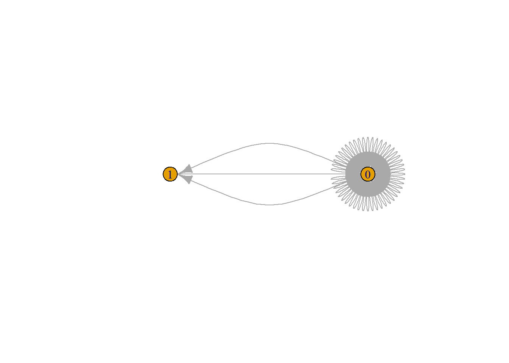
graph2 <- graph_from_adjacency_matrix(s501, mode = "undirected")## Warning: The `adjmatrix` argument of
## `graph_from_adjacency_matrix()` must be symmetric
## with mode = "undirected" as of igraph 1.6.0.
## ℹ Use mode = "max" to achieve the original
## behavior.
## This warning is displayed once per session.
## Call `lifecycle::last_lifecycle_warnings()` to see
## where this warning was generated.plot(graph2)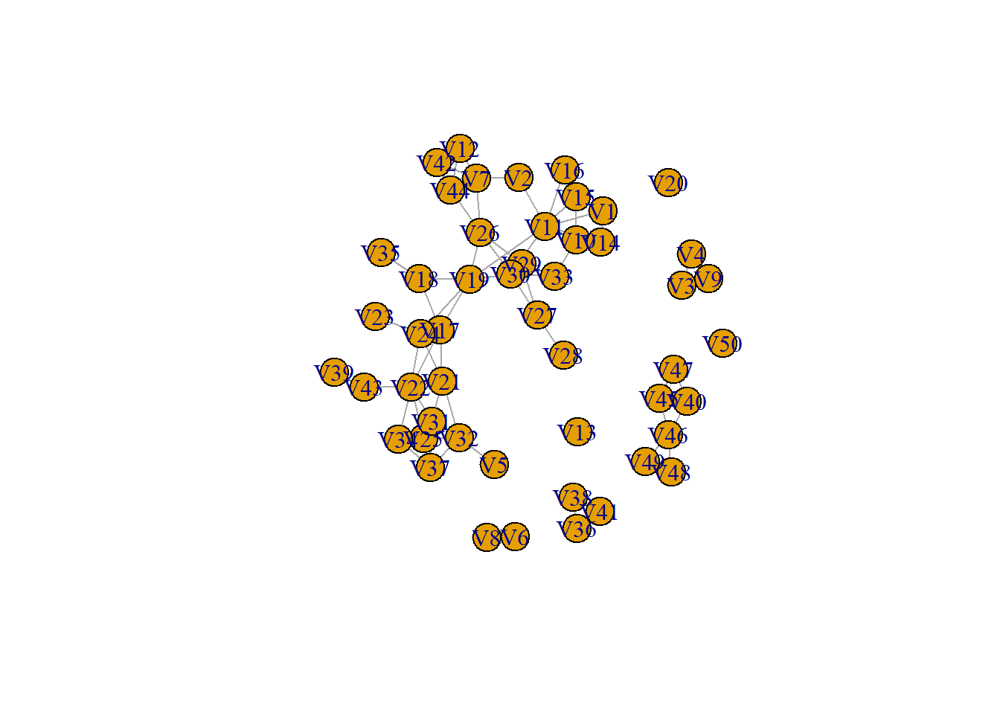
graph3 <- graph_from_adjacency_matrix(s501, mode = "directed")
plot(graph3)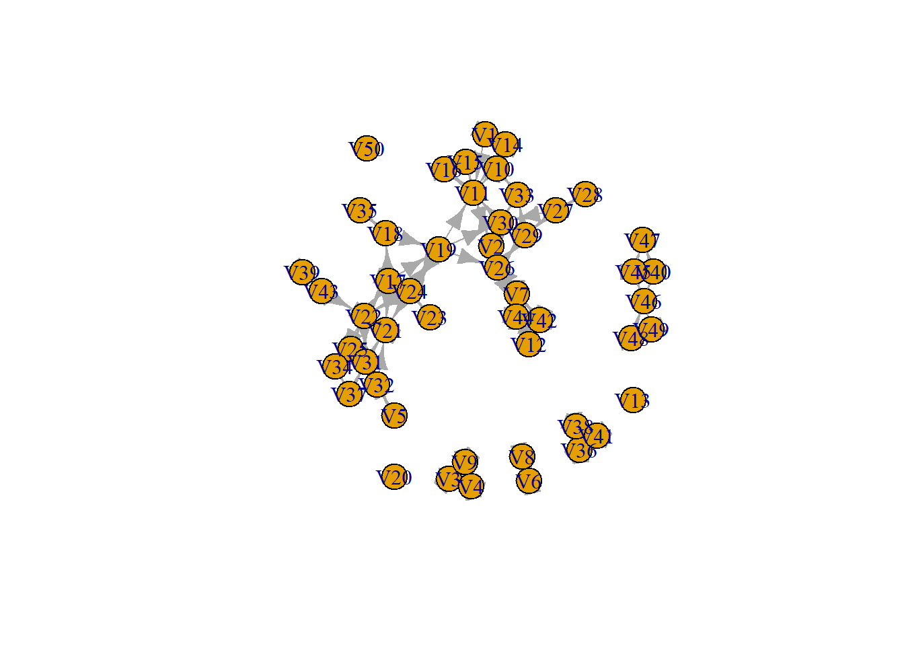
graph4 <- graph_from_adjacency_matrix(s501)
plot(graph4)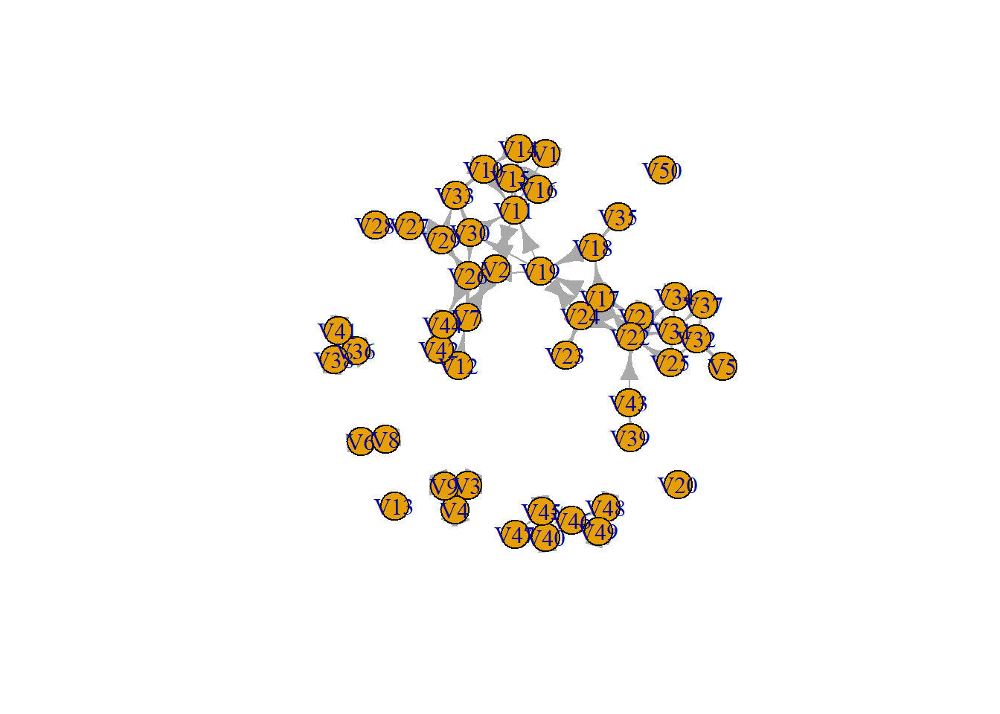
What we can tell from this, is that there are both directed and undirected ties in this network, visually it seems like there are more undirected ties.
between <- betweenness(
graph4,
v = V(graph4),
directed = TRUE,
weights = NULL,
normalized = FALSE,
cutoff = -1
)
between## V1 V2 V3 V4 V5 V6 V7 V8 V9
## 0.000000 50.833333 0.000000 0.000000 0.000000 0.000000 54.333333 0.000000 0.000000
## V10 V11 V12 V13 V14 V15 V16 V17 V18
## 44.000000 128.833333 0.000000 0.000000 5.000000 43.833333 0.000000 176.000000 38.000000
## V19 V20 V21 V22 V23 V24 V25 V26 V27
## 202.000000 0.000000 70.000000 220.000000 0.000000 67.000000 25.666667 72.000000 12.000000
## V28 V29 V30 V31 V32 V33 V34 V35 V36
## 0.000000 10.666667 79.166667 68.500000 47.500000 47.333333 10.000000 0.000000 0.000000
## V37 V38 V39 V40 V41 V42 V43 V44 V45
## 3.333333 0.000000 0.000000 1.500000 0.000000 0.000000 26.000000 11.000000 1.500000
## V46 V47 V48 V49 V50
## 10.000000 0.000000 0.000000 3.000000 0.000000plot(between)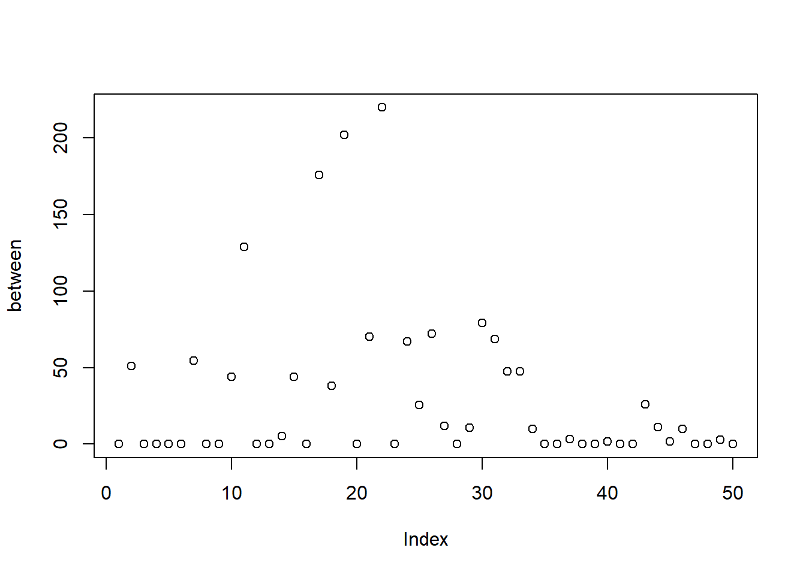
Looking at macro segregation on drinking behaviour
friend.data.w1 <- s501
drink <- s50a
# install.packages("sna")
library("sna")## Loading required package: statnet.common##
## Attaching package: 'statnet.common'## The following objects are masked from 'package:base':
##
## attr, order, replace## sna: Tools for Social Network Analysis
## Version 2.8 created on 2024-09-07.
## copyright (c) 2005, Carter T. Butts, University of California-Irvine
## For citation information, type citation("sna").
## Type help(package="sna") to get started.##
## Attaching package: 'sna'## The following objects are masked from 'package:igraph':
##
## betweenness, bonpow, closeness, components, degree, dyad.census, evcent, hierarchy,
## is.connected, neighborhood, triad.censusnet1 <- network::as.network(friend.data.w1)
snam1 <- sna::nacf(net1, drink[, 1], type = "moran", neighborhood.type = "out", demean = TRUE)
snam1[2]## 1
## 0.4331431view(drink)